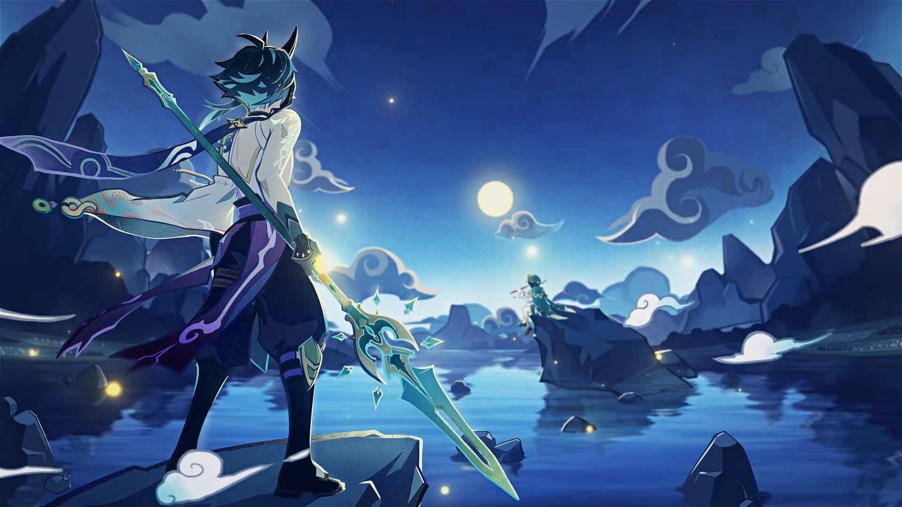
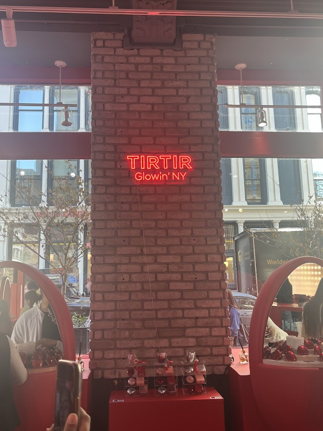
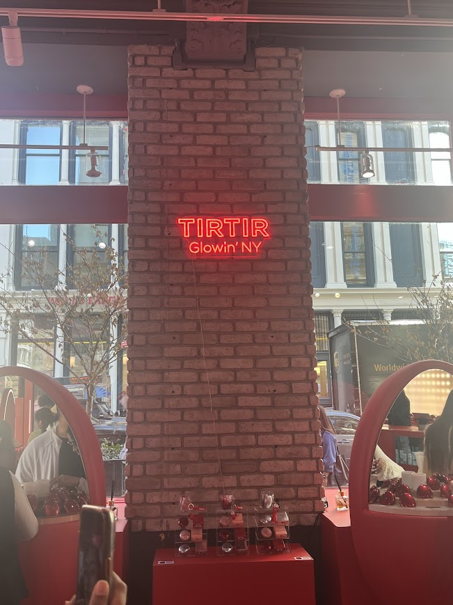

hobbies
🎶 spotify & gaming
i love listening to so many different things, but i've really been deep into k-pop for a while. as for games, i'm actually not much of a gamer but i've consistently been playing genshin for a couple of years now. i love the open-world of the game and the different characters and the storyline. i don't rlly play roblox, i just downloaded bc my friends want me to play sometimes for fun :P. check out my spotify!
📺 anime
started getting more into anime like maybe after covid?? don't have time to list them all but some of my faves are jjk, banana fish, bungou stray dogs, monster, attack on titan, and just so many more.
🎥 k-dramas
same sentiments as anime: so many good ones, not enough time to list them all. maybe some all time favorites would be vagabond, mr. plankton, start up (highly recommend this if you are anybody in tech!!!), strong woman do bong soon, and goblin (don't talk to me if you've never watched goblin). and yes, i'm not including squid game in this list....
🎵 k-pop
my playlists are full of k-pop bops — from old school legends to new-gen icons. i like a looooot of groups but my current favorite is enhypen (stan them pls they don't disappoint). if you have no life like me and are deep into kpop company lore, the music and performance from SM ent groups are TOP TIERRRRRRR ESPECIALLY KENZIE AND DEM JOINTZ YK THEY'RE ALWAYS GONNA COOK WHEN YOU HEAR THEIR PRODUCER TAGS IN A SONG RAHHHHHHHHHHHHHHHHHHHH. i promise i'm not a miserable company stan, i just know talent when i see and hear it. i also like a lot of non SM groups tho like especially all the new girl groups and the 2nd/3rd gen boy groups.
💄 k-beauty
their skincare and makeup just goes so hardddd and their lip tints are peak ifykyk like i'm gonna become financially irresponsible from splurging on all this stuff one day (i already am :P)
🌇 exploring the city
i love going out to the city more ever since i started college (especially since i'm from long island). big back alert here: drop a nice halal place and i WILL be adding it to my bucket place.
 
